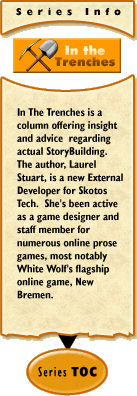

|
In the Trenches #1: Becoming A Storybuilding Successby Laurel Stuart Welcome to Skotos' newest column, a journey through the actual Storybuilding process, step-by-step. I'm a new face around the Skotos web site. Storybuilding represents a completely new venture for me. I've moderated, hosted, administrated, mediated, fought for, cried over, and heck, even played in text-dominant online RPGs since 1996. Yet I've never done anything so encompassing or exciting as Storybuilding before. Twice a month, this column will aim to provide suggestions and advice for Storybuilders. Future Storybuilders will hopefully appreciate my triumphs and most importantly learn from my mistakes. Let me share with you why I find the Skotos Storybuilder program to be so incredibly exciting. I won't lay out the complete history of MMORPGs and Interactive Fiction. Anyone who's interested in that particular topic should read Richard Bartle's article on Early MUD history and check out the Online World Timeline. There are far better people in this community than myself to discuss the way online text-based games have grown more sophisticated over time. They can describe those recent advances in technology and computer languages that point the way to the future. Most of these veterans have been programming code and writing scripts for online games for years. They haven't just read the history of online text games: they created it. I would classify myself as a MMORPG user, not a history maker. Its only been because of my upcoming Grand Theatre, that I'm delving into the world of object-oriented scripts and XML in the first place. That's what makes the Skotos Storybuilding system so amazing. It bridges the enormous gap that has always stood between people who love to create online game ~code~ and people who love creating online game ~settings~ but were always too intimidated by the process to start building their own MUD or chat system. Skotos has always wanted talented, enthusiastic people who aren't necessarily programmers to be able to use the Storybuilding Tool Kit. I've had enormous experience at every facet of organizing and sustaining massive player online games except coding, so I made an ideal candidate to prove that the Storybuilding system can work successfully for anyone with the interest and patience to build their world brick by brick. I hope so, any way. I've committed myself to creating fascinating, sustainable, confinable role-playing games specifically tailored for Skotos. I've always wanted to be God. I surfed my way over to Skotos in the first place looking for articles to help me become a better online staff member/moderator because I believe being a god of a virtual world, no matter how large or small, is half pleasure and half responsibility. The biggest part of the responsibility is providing a fun and fair atmosphere for all of your players. That's also the most difficult part of staffing an online game. It was one of Shannon's articles, that inspired me to read through the Storybuilding portion of the Skotos site. The more I read, the more excited I became. Soon, I was reading through not just the available articles on Storybuilding, but almost every article in the archives. Time will tell if I can prove myself and turn a dream into a reality. Before I go any farther, however, let me talk about the word success. The first step into creating anything is to envision and define the creation itself. This includes envisioning and defining the idea of success as a Storybuilder. If the word success brings a money symbol flashing before your eyes and nothing more, Storybuilding probably isn't your calling. To quote a fellow game developer, "making RPGs is a hand-to-mouth existence at best; most people who design their own games or freelance for big gaming companies will never be quitting their day jobs." Greed makes a terrible primary goal for a Storybuilder. Avoid other self-serving goals like doing it to lord over acquaintances at GenCon, impress the ladies, or to spit in the face of the staff your favorite online game in order to prove once and for all that they 'did it wrong.' A truly successful Storybuilder will be someone who makes their ~game~ a success. Making a successful game is actually easy, as long as you have the tenacity to see the entire project through. Successful games (tabletop, LARP, or MMORPG) need meet only three criteria. 1) A SUCCESSFUL GAME MUST BE COMPLETED – Aspiring game designers share a common flaw with aspiring novelists; its a lot easier for them to start a project than end one. At some points in the development process, game building becomes a lot of work. Regardless of all the obstacles (and there are always obstacles), a successful game designer keeps plugging away, day after day. They write, they re-write, they experiment and redesign. They don't stop creating their game until their game is finished and withstands the rigors of playtesting with flying colors. 2) A SUCCESSFUL GAME MUST GET PUBLISHED – Thanks to the Internet, this is now a very easy process. Not every game designer can afford printing costs or jump through the right hoops to find distributors and retailers but they can put a pdf or text file on the Internet on a web site, advertise the web site in the appropriate forums- and that's enough. If the game is a good one, players will come and then bring in their friends. MMORPG games have the advantage of being tailored for online players, which makes advertising them on the Internet particularly useful. The potential player base is already there, surfing game sites, looking for something new and interesting to become involved in. MMORPGs do require a web site and substantial bandwidth- and a dedicated someone with the technical skills necessary to keep an online game up and running. Storybuilders will be fortunate enough to have the Skotos staff taking good care of the game servers, so they can focus on the other aspects of being a virtual god. 3) A SUCCESSFUL GAME MUST HAVE PLAYERS WHO ARE HAVING FUN PLAYING THE GAME – If you want to tell a good story, you should write one. If you want to create a fascinating setting that will enable players to co-create their own good stories together, you should seriously consider Storybuilding. I've seen many online games rise and fall... fall into seething pits of rivalry, jealousy, and bitterness. Players might be there, but they aren't having much fun and they will lash out at each other- and whoever is in charge. An important part of being a Storybuilder is not just creating the initial plot and the environment, but providing the players with rules, guidelines, social contracts, and conflict-resolving staff members they need to have fun together and feel like they are being treated fairly by each other and the staff. If the game is well-designed, if the premise is original and interesting, if the staff is both helpful and polite, if the game is advertised in the appropriate channels, players will come and players will have fun. They will consider your game a success and so should you. Success, while not as glorious as fame, fortune or revenge, is far more obtainable and sustainable. Being a successful Storybuilder will still be a lot of work, but Skotos is working hard to provide the right tools to help. All you will have to provide is the energy, enthusiasm, and imagination. If you look at the popularity of software, newsgroups and web sites devoted to game design and independent rpg development, its clear that most of us gamer types do want to be virtual gods. We love the characters we create and the stories that they become involved in. Role playing is a dynamic art form in the first place. It really shouldn't be a surprise that people who love to create one character or one storyline might feel even more enthusiasm towards building an entire setting and resolution system from scratch. Add in those pipe dreams of being an Industry 'star'- which are of course, the very same dreams and ambitions that have inspired artists and writers through the ages. There's nothing wrong with wanting to be able to support one's family through one's art- but profit should never be the primary reason one is an artist; you are bound to become jaded and disappointed. So what now? What are the first steps of being a successful Storybuilder beyond setting aside the illusions of money and power to work towards the more practical intention of just getting your game up and running with a setting and rules system your players will enjoy? My next article is going to delve into the most important factors that need to be taken into account before you personally commit to Storybuilding or, in some cases, becoming an External Developer like the Skotos Seven. I'll go through everything to think about and prepare for while writing up an actual Storybuilding proposal. Until then, keep turning dreams into designs all on your own.
|